Untuk Server yaitu debian disetting 2 adapter, Adapter 1 :Host-only Adapter& Adapter 2 :Internal Network
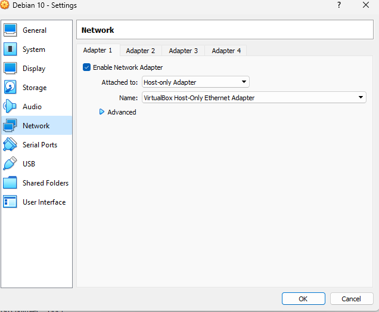 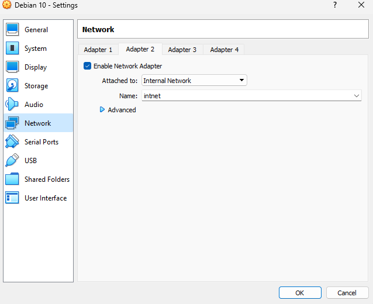Untuk Client yaitu windows dissetting 1 adapter yaituInternal Network
Share jaringan dari internet keHost-only Adapter
BukaControl Panel > Network and Internet > Network Connections
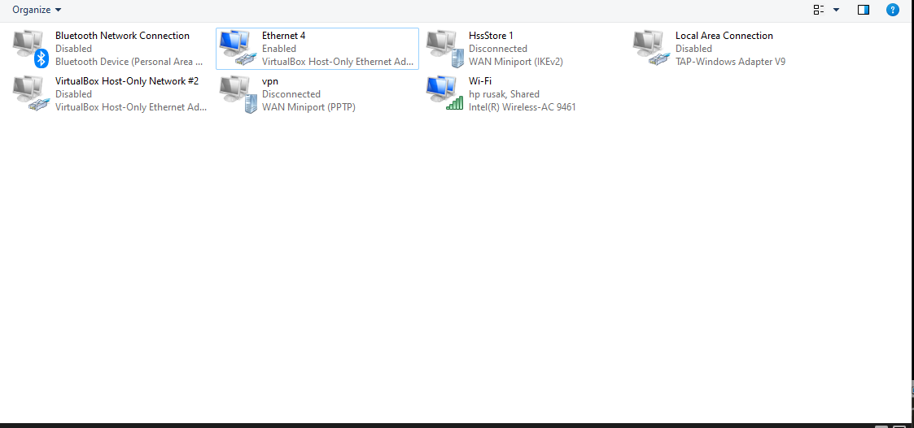Kemudian click kanan di sumber internet kemudian pilihProperties > Sharing kemudian checkist danOK
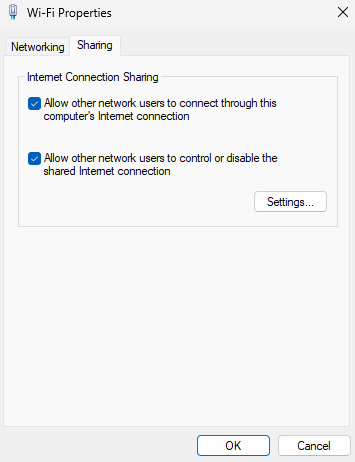Click kanan di Host-only Adapter pilihProperties > (TCP/IPv4), kemudian beriIP NETMASK & DNS kemudianOK
IP : 192.168.44.1
NS : 255.255.255.0
DNS: 8.8.8.8
Massukan commandnano /etc/network/networking
enp0s3adalah interface dariHost-only Adapterdengan configurasi
IP : 192.168.44.2
NS : 255.255.255.0
GW : 192.168.44.2
enp0s8adalah interface dariInternal Networkdengan configurasi
IP : 172.168.44.1
NS : 255.255.255.240
Massukan commandnano /etc/resolv.confmassukanDNSgoogle8.8.8.8
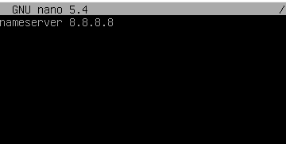Kemudian restart networking dengan commandsystemctl restart networking
Tes connection keGateWaydengan commandping 192.168.44.1
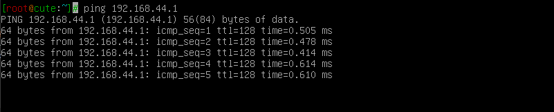Tes connection keDNS googledengan commandping 8.8.8.8
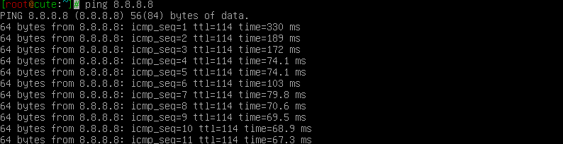Tes connection kegoogle.comdengan commandping google.com
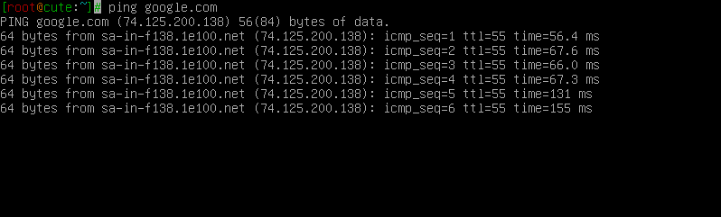Massukan commandnano /etc/sysctl.conf, hilangkan tanda pagar dibelakang# net.ipv4.ip_forward=1 >> net.ipv4.ip_forward=1
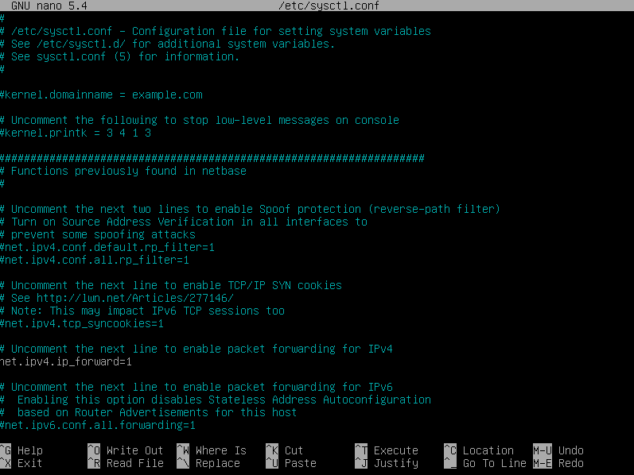Kemudian install iptables dengan commandapt install iptables
iptables berfungsi sebagai firewall dalam sistem operasi Linux. Dengan iptables, Anda bisa mengatur lalu lintas jaringan dalam server seperti mengizinkan, memblokir atau melewatkan koneksi masuk dan keluar, mengelola port dan lain sebagainya.
Sharing internet disetiap PC Client dengan commandiptables -t nat -A POSTROUTING -s 172.16.44.0/28 -j MASQUERADE
172.16.44.0/28adalah network id di interfaceInternal Network (enp0s8)
BukaControl Panel > Network and Internet Connections > Network Connections
Click kanan padaNetwork Interface > Properties > (TCP/IP)
IP harus satuNetworkdengan IP pada interfaceenp0s8pada Server
IP : 172.16.44.3
NS : 255.255.255.240
GW : 172.16.44.1
DNS : 8.8.8.8
Tes connection keGateWaydengan commandping 172.16.44.1
Tes connection keGateWay Serverdengan commandping 192.168.44.1
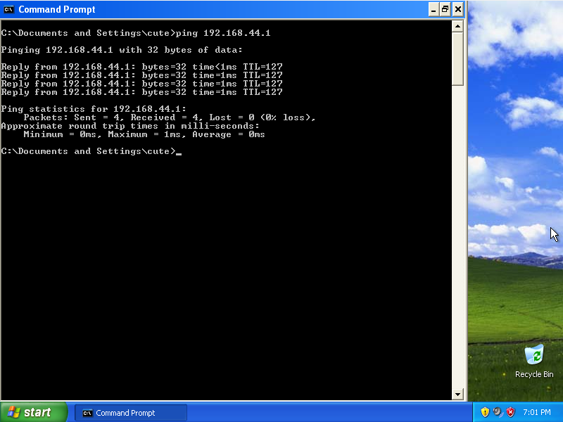Tes connection keDNS googledengan commandping 8.8.8.8
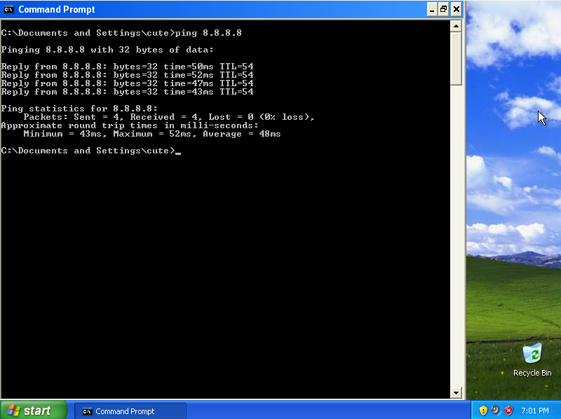Tes connection kegoogle.comdengan commandping google.com
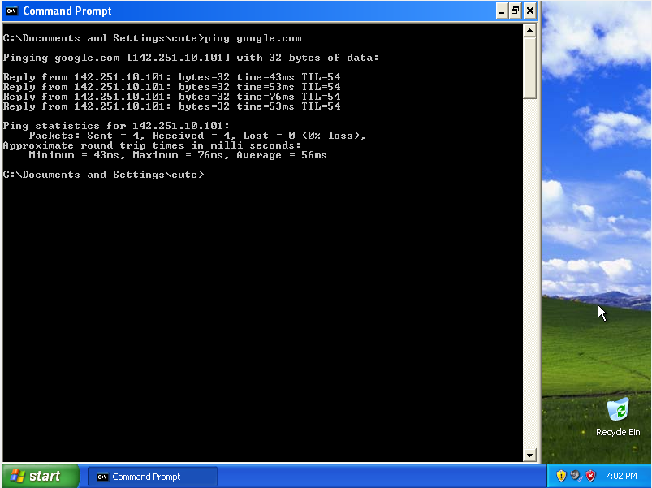Setiap perubahaniptablesyang saya lakukan diatas bersifat tidak permanent dan akan hilang ketika serverreboot, dan perlu disimpan agar tetap ada di saat serverreboot
Buat folder bernamaiptablesdi dalam folderetcdengan commandmkdir /etc/iptables
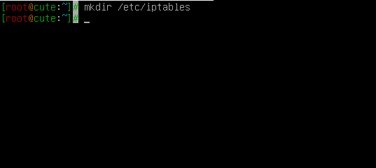Save configurasi iptables didalam folder/etc/iptablesdengan namarules.v4dengan commandiptables-save > /etc/iptables/rules.v4
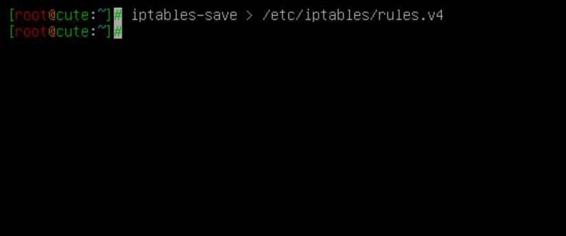Kemudian lihat isinya dengan commandnano /etc/iptables/rules.v4
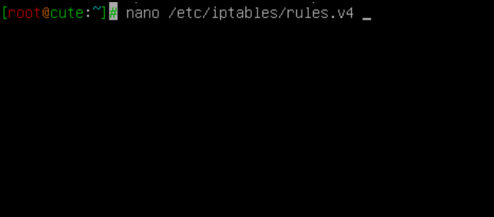 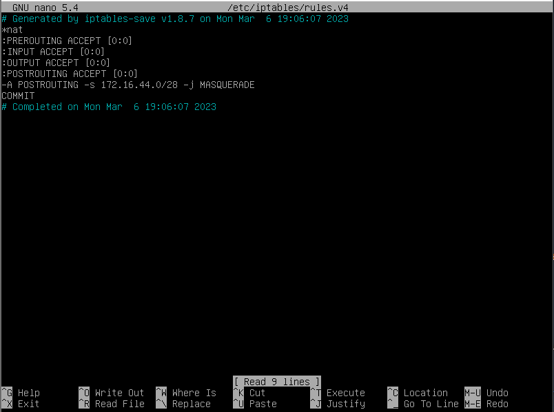Kemudian installiptables-persistentdengan commandapt-get install iptables-persistent
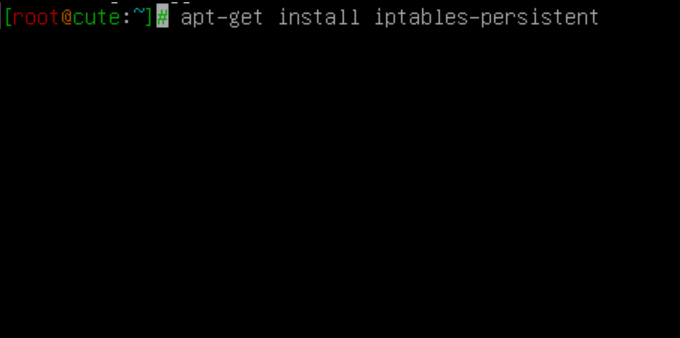Klick yes untuk menyimpanIPv4 rulesdi/ect/iptables/rules.v4
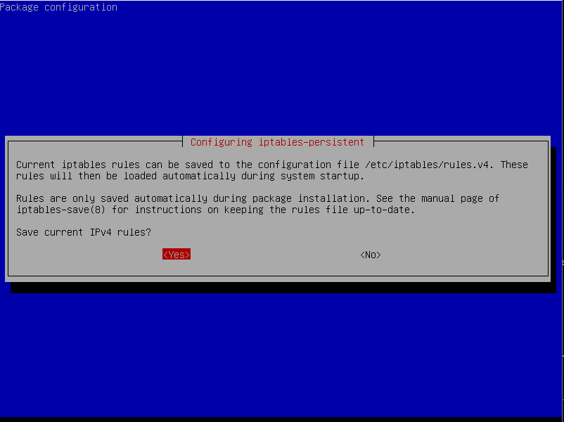Klick yes untuk menyimpanIPv6 rulesdi/ect/iptables/rules.v6
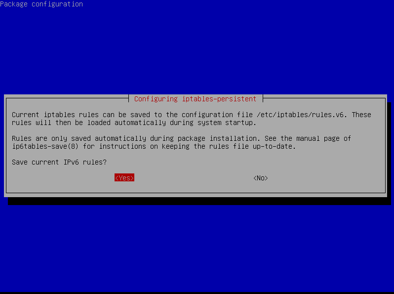Kemudian jalankaniptables-persistentdengan commandsystemctl is-enabled netfilter-persistent
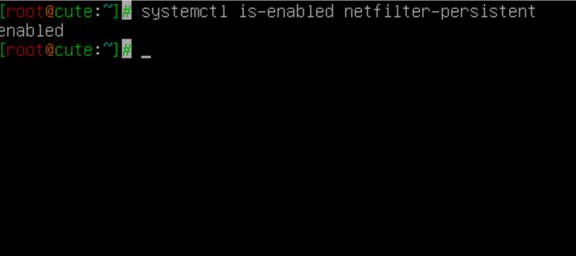